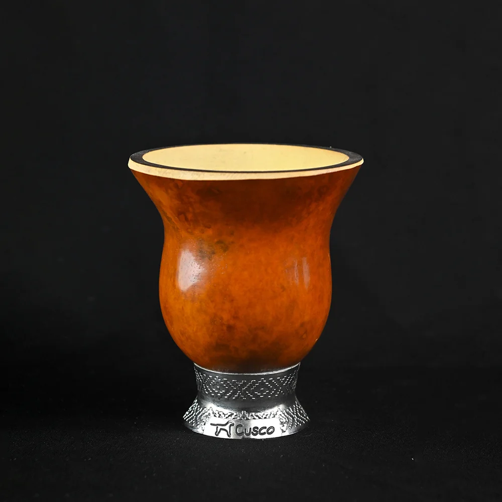
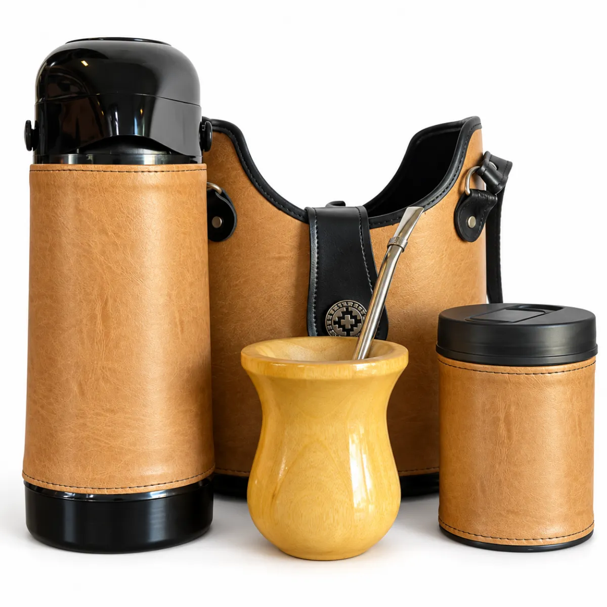
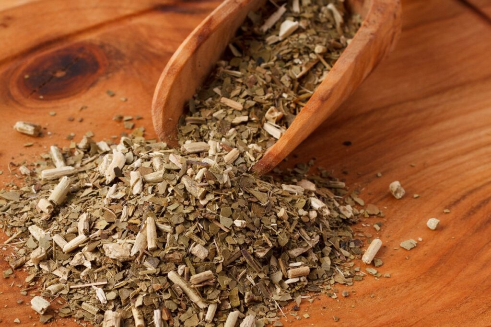
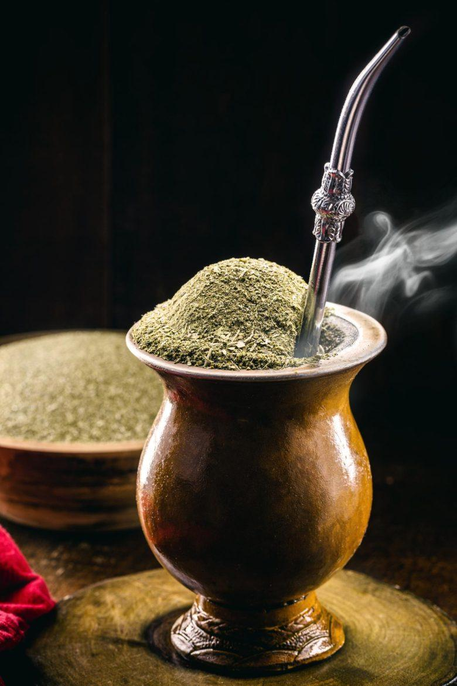

O chimarrão possui raízes profundas na América do Sul, sendo herdado dos povos indígenas Guarani e Kaingang antes de se tornar o maior símbolo do Sul do Brasil. Essa bebida feita com erva-mate e água quente ultrapassa gerações e carrega um forte valor cultural, representando a identidade gaúcha e a preservação de costumes ancestrais.
Mais do que uma simples bebida, preparar e servir o mate é um ato social baseado na partilha e no acolhimento. A tradição de passar a cuia em uma roda de conversa aproxima amigos e familiares, fortalecendo laços comunitários e promovendo momentos de pausa e diálogo no cotidiano.

Além do papel cultural, a infusão da erva-mate oferece diversas propriedades nutricionais importantes para o organismo. Rica em antioxidantes, vitaminas e cafeína natural, a bebida auxilia no combate aos radicais livres, melhora a digestão e estimula o foco mental de forma saudável.

Um dos erros mais comuns no preparo do chimarrão é utilizar água fervendo, o que pode queimar a erva-mate e deixar a bebida excessivamente amarga. A temperatura ideal fica entre 60°C e 70°C, suficiente para extrair o sabor e os nutrientes sem comprometer as propriedades da planta.

O formato inclinado da erva na cuia, conhecido como morrinho, não serve apenas para estética. Essa estrutura impede que a bomba entupa e garante que a água extraia o sabor da erva-mate gradualmente, fazendo com que o mate dure mais tempo sem perder o gosto.
